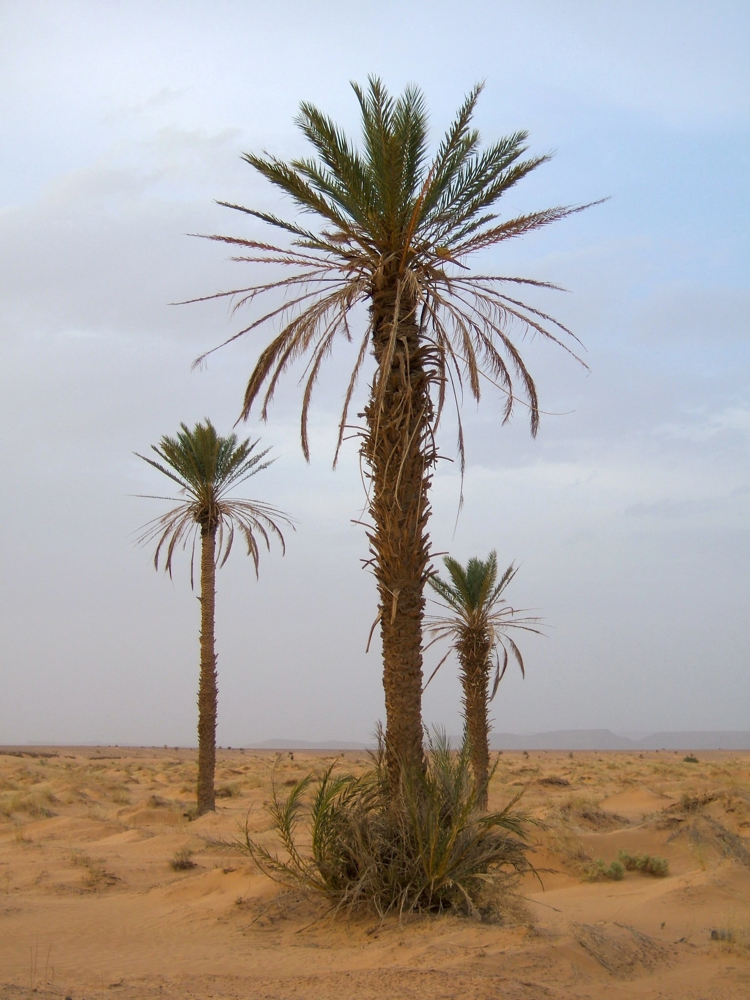

Pohon kurma yang berbuah dan tumbuh subur.
Mengapa Pohon Kurma?
Perumpamaan pohon kurma untuk seorang Muslim yang baik memiliki beberapa makna mendalam:
- Daunnya Tidak Gugur Sepanjang Tahun: Melambangkan keimanan yang konsisten.
- Akarnya Menghujam Kuat: Melambangkan akidah yang kokoh.
- Buahnya Manis dan Bermanfaat: Melambangkan akhlak mulia dan amal saleh.
- Seluruh Bagiannya Berguna: Melambangkan seorang muslim yang membawa manfaat bagi sekitarnya.
- Tumbuh di Lahan yang Tandus: Melambangkan kesabaran dan ketangguhan.
Keterkaitan dengan Materi PAI SD
Kelas 1, 2, 3
- Akhlak Terpuji: Sifat konsisten dan kokoh pohon kurma dihubungkan dengan sikap jujur dan sabar.
- Asmaul Husna: Keutamaan pohon kurma sebagai ciptaan yang bermanfaat menjadi contoh kebesaran Allah.
Kelas 4, 5, 6
- Akhlak Mulia: Konsep bermanfaat bagi orang lain dari pohon kurma cocok dengan materi tanggung jawab sosial.
- Iman kepada Rasul: Kekokohan pohon kurma dihubungkan dengan sifat amanah dan shiddiq para rasul.
- Zakat dan Infak: Sifat pohon kurma yang selalu memberi menjadi analogi pentingnya berbagi.